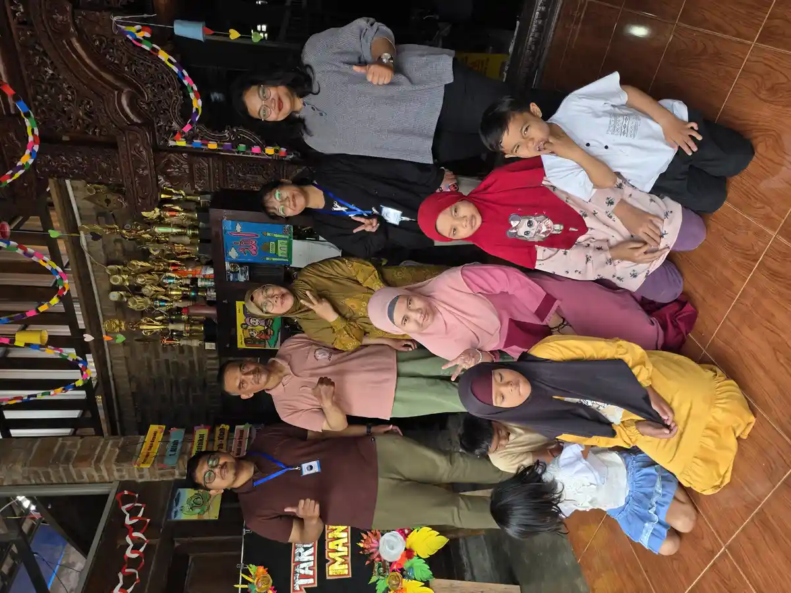

Disabilitas adalah kondisi keterbatasan fungsi tubuh yang meliputi gangguan fisik, intelektual, mental, atau sensorik dalam jangka waktu yang panjang. Kondisi ini dapat menghambat partisipasi penuh seseorang dalam kehidupan bermasyarakat secara setara dengan orang lain. Berdasarkan data publik yang tersedia, tahun 2022, terdapat sekitar 22,97 juta penyandang disabilitas di Indonesia, atau sekitar 8,5% dari total populasi. Angka ini menunjukkan bahwa disabilitas bukanlah hal yang jarang terjadi dan perlu menjadi perhatian bersama.
Di Yayasan Ukhuwah Kaffah Amanatullah (YUKA), kami percaya bahwa setiap individu, termasuk penyandang disabilitas, memiliki potensi luar biasa yang bisa dikembangkan. Melalui Sekolah Inklusi Taruna Imani di Sleman, Yogyakarta, kami mendampingi anak-anak berkebutuhan khusus dengan pendekatan yang holistik, penuh kasih sayang, dan berbasis pada kesetaraan hak. Artikel ini kami susun untuk membantu masyarakat luas memahami pengertian disabilitas, mengenal berbagai jenisnya, serta mengetahui hak-hak yang dilindungi oleh hukum Indonesia.
Pemahaman yang benar tentang disabilitas sangat penting karena masih banyak stigma dan kesalahpahaman di masyarakat. Dengan memahami kondisi ini secara utuh, kita bisa bersama-sama membangun lingkungan yang lebih inklusif dan ramah bagi semua. Untuk gambaran lebih luas tentang anak berkebutuhan khusus, Anda juga bisa membaca panduan kami tentang ABK (Anak Berkebutuhan Khusus).
Daftar Isi
- Apa Itu Disabilitas?
- Jenis-Jenis Disabilitas di Indonesia
- Disabilitas Fisik, Sensorik, Intelektual, dan Mental
- Data Statistik Disabilitas di Indonesia
- Hak Hukum Penyandang Disabilitas (UU No. 8 Tahun 2016)
- Program Dukungan Pemerintah dan Masyarakat
- Peran YUKA dalam Mendukung Penyandang Disabilitas
- FAQ Seputar Disabilitas
Apa Itu Disabilitas?
Disabilitas adalah istilah yang merujuk pada kondisi keterbatasan fungsi tubuh seseorang, baik secara fisik, intelektual, mental, maupun sensorik, yang berlangsung dalam jangka waktu lama dan dapat menghambat interaksi serta partisipasi penuh dalam masyarakat. Istilah ini berasal dari bahasa Inggris "disability" yang secara harfiah berarti ketidakmampuan. Namun, penting untuk dipahami bahwa disabilitas bukan berarti seseorang tidak mampu melakukan apa pun. Yang terjadi adalah adanya hambatan tertentu yang memerlukan penyesuaian dan dukungan dari lingkungan sekitar.
Menurut Undang-Undang Nomor 8 Tahun 2016 tentang Penyandang Disabilitas, penyandang disabilitas didefinisikan sebagai "setiap orang yang mengalami keterbatasan fisik, intelektual, mental, dan/atau sensorik dalam jangka waktu lama yang dalam berinteraksi dengan lingkungan dapat mengalami hambatan dan kesulitan untuk berpartisipasi secara penuh dan efektif dengan warga negara lainnya berdasarkan kesetaraan hak." Definisi ini menekankan bahwa hambatan bukan hanya berasal dari individu, tetapi juga dari lingkungan yang belum sepenuhnya inklusif.
Organisasi Kesehatan Dunia (WHO) melalui International Classification of Functioning, Disability and Health (ICF) mendefinisikan disabilitas sebagai interaksi antara kondisi kesehatan seseorang dengan faktor personal dan faktor lingkungan. Pendekatan ini dikenal sebagai model sosial disabilitas, di mana disabilitas tidak semata-mata dilihat sebagai masalah medis individu, tetapi juga sebagai hasil dari hambatan sosial dan lingkungan yang membatasi partisipasi penyandang disabilitas.
Konsep difabel (differently abled) juga sering digunakan di Indonesia untuk menggambarkan orang-orang dengan kemampuan yang berbeda. Istilah difabel menekankan bahwa penyandang disabilitas memiliki kemampuan, hanya saja berbeda dari orang pada umumnya. Pergeseran istilah ini mencerminkan perkembangan pemahaman masyarakat yang semakin menghargai keberagaman dan menolak diskriminasi.
Dalam konteks Islam, setiap manusia diciptakan dalam sebaik-baik bentuk (QS. At-Tin: 4). Perbedaan kondisi fisik, intelektual, atau sensorik bukanlah alasan untuk merendahkan seseorang. Justru, keberadaan penyandang disabilitas menjadi ujian dan kesempatan bagi masyarakat untuk menunjukkan kepedulian, keadilan, dan rasa saling menolong. Inilah nilai yang kami pegang teguh di YUKA dalam mendampingi anak-anak berkebutuhan khusus.

Jenis-Jenis Disabilitas di Indonesia
Memahami jenis disabilitas sangat penting agar masyarakat dapat memberikan dukungan yang tepat sesuai kebutuhan masing-masing individu. Berdasarkan UU No. 8 Tahun 2016, disabilitas di Indonesia diklasifikasikan ke dalam empat kategori utama. Selain empat kategori pokok tersebut, undang-undang juga mengakui adanya disabilitas ganda atau multi, yaitu kondisi di mana seseorang mengalami dua atau lebih jenis disabilitas sekaligus.
Berikut adalah empat jenis utama disabilitas menurut undang-undang:
- Disabilitas Fisik: Gangguan fungsi gerak yang meliputi amputasi, lumpuh layuh atau kaku, paraplegi, celebral palsy (CP), akibat stroke, akibat kusta, dan orang kecil. Penyandang disabilitas fisik memerlukan alat bantu mobilitas dan aksesibilitas fisik di lingkungan sekitarnya. Untuk pemahaman lebih dalam, baca artikel kami tentang tuna daksa.
- Disabilitas Intelektual: Gangguan fungsi pikir karena tingkat kecerdasan di bawah rata-rata. Termasuk dalam kategori ini adalah tunagrahita (lamban belajar) dan down syndrome. Penyandang disabilitas intelektual membutuhkan pendekatan pembelajaran yang disesuaikan dengan kemampuan kognitif mereka.
- Disabilitas Mental: Gangguan fungsi pikir, emosi, dan perilaku yang meliputi psikososial (seperti skizofrenia, bipolar, depresi, dan gangguan kecemasan) serta disabilitas perkembangan yang memengaruhi kemampuan interaksi sosial (seperti autisme dan ADHD). Disabilitas mental sering kali tidak terlihat secara fisik sehingga memerlukan pemahaman dan empati yang lebih besar dari lingkungan.
- Disabilitas Sensorik: Gangguan salah satu fungsi indra, meliputi tunanetra (gangguan penglihatan), tunarungu (gangguan pendengaran), dan tuna wicara (gangguan bicara). Penyandang disabilitas sensorik memerlukan alat bantu sensorik dan metode komunikasi alternatif.
Selain keempat kategori tersebut, terdapat juga penyandang disabilitas ganda atau multi, yaitu mereka yang memiliki dua atau lebih ragam disabilitas. Misalnya, seorang anak yang mengalami tunanetra sekaligus tunarungu, atau seseorang dengan disabilitas fisik yang juga memiliki disabilitas intelektual. Penanganan untuk penyandang disabilitas ganda memerlukan pendekatan yang lebih komprehensif dan melibatkan berbagai disiplin ilmu.
Tahukah Anda?
Istilah "penyandang disabilitas" resmi menggantikan istilah "penyandang cacat" sejak disahkannya UU No. 8 Tahun 2016. Perubahan istilah ini bukan sekadar soal bahasa, tetapi mencerminkan pergeseran paradigma dari model medis yang memandang disabilitas sebagai kekurangan individu, menuju model sosial yang menekankan pentingnya lingkungan yang inklusif dan aksesibel bagi semua orang.
Disabilitas Fisik, Sensorik, Intelektual, dan Mental
Untuk memberikan pemahaman yang lebih mendalam, berikut penjelasan detail mengenai masing-masing jenis disabilitas beserta contoh konkret dan kebutuhan khusus yang menyertainya.
Disabilitas Fisik
Disabilitas fisik adalah gangguan pada fungsi gerak tubuh yang memengaruhi kemampuan seseorang dalam melakukan aktivitas sehari-hari. Kondisi ini dapat bersifat bawaan sejak lahir atau didapat akibat kecelakaan, penyakit, atau proses penuaan. Contoh disabilitas fisik meliputi:
- Amputasi pada salah satu atau beberapa anggota tubuh
- Paraplegia (kelumpuhan pada bagian bawah tubuh) dan quadriplegia (kelumpuhan pada keempat anggota gerak)
- Cerebral palsy, yaitu gangguan gerak dan postur tubuh akibat kerusakan otak yang tidak progresif
- Polio atau lumpuh layu yang memengaruhi kekuatan otot
- Kelainan bentuk tulang belakang seperti skoliosis berat
- Kondisi pasca-stroke yang memengaruhi kemampuan motorik
Penyandang disabilitas fisik membutuhkan aksesibilitas lingkungan seperti ram (jalur landai), lift, kamar mandi yang disesuaikan, serta alat bantu mobilitas seperti kursi roda, kruk, atau prostesis. Dengan lingkungan yang aksesibel, mereka dapat beraktivitas secara mandiri dan produktif. Banyak penyandang tuna daksa yang berhasil meraih prestasi tinggi dalam berbagai bidang, dari olahraga paralimpiade hingga kewirausahaan.
Disabilitas Sensorik
Disabilitas sensorik meliputi gangguan pada fungsi indra, terutama penglihatan, pendengaran, dan bicara. Setiap jenis gangguan sensorik memerlukan pendekatan komunikasi dan pembelajaran yang berbeda:
- Tunanetra: Gangguan penglihatan yang meliputi buta total dan low vision (penglihatan terbatas). Penyandang tunanetra menggunakan huruf Braille, tongkat putih, anjing pemandu, atau teknologi pembaca layar (screen reader) untuk beraktivitas.
- Tunarungu: Gangguan pendengaran yang meliputi tuli total dan kurang dengar. Penyandang tunarungu berkomunikasi menggunakan bahasa isyarat (BISINDO atau SIBI), membaca gerak bibir, atau menggunakan alat bantu dengar dan implan koklea.
- Tuna wicara: Gangguan dalam kemampuan berbicara yang dapat disebabkan oleh kelainan pada organ bicara, gangguan neurologis, atau kondisi lainnya. Pelajari lebih lengkap tentang tuna wicara di artikel terpisah kami.
Disabilitas Intelektual
Disabilitas intelektual ditandai dengan keterbatasan signifikan dalam fungsi intelektual (seperti penalaran, belajar, dan pemecahan masalah) serta perilaku adaptif (seperti keterampilan sosial dan keterampilan hidup sehari-hari). Kondisi ini biasanya muncul sebelum usia 18 tahun. Beberapa kondisi yang termasuk disabilitas intelektual antara lain:
- Tunagrahita: Kondisi di mana seseorang memiliki IQ di bawah 70 yang memengaruhi kemampuan belajar dan beradaptasi. Tunagrahita terbagi menjadi ringan, sedang, dan berat berdasarkan tingkat keparahannya.
- Down Syndrome: Kondisi genetik yang disebabkan oleh kelebihan kromosom 21, menyebabkan keterlambatan perkembangan dan ciri fisik yang khas. Baca penjelasan lengkap tentang down syndrome.
- Fragile X Syndrome: Penyebab genetik paling umum kedua dari disabilitas intelektual setelah down syndrome.
Anak-anak dengan disabilitas intelektual membutuhkan pendekatan pembelajaran yang lebih individual, sabar, dan terstruktur. Di YUKA, kami menerapkan kurikulum yang disesuaikan dengan kemampuan masing-masing anak, sehingga setiap anak bisa belajar dan berkembang sesuai potensinya. Sistem pendidikan inklusi yang kami jalankan memungkinkan anak-anak dengan berbagai tingkat kemampuan belajar bersama dalam lingkungan yang saling mendukung.
Disabilitas Mental
Disabilitas mental mencakup gangguan pada fungsi pikir, emosi, dan perilaku yang memengaruhi kemampuan seseorang dalam menjalani kehidupan sehari-hari. Berbeda dengan disabilitas fisik yang tampak secara kasat mata, disabilitas mental sering kali tidak terlihat sehingga sering disalahpahami oleh masyarakat. Jenis-jenis disabilitas mental meliputi:
- Gangguan psikososial: Skizofrenia, gangguan bipolar, depresi berat, gangguan kecemasan berat, dan gangguan kepribadian. Kondisi-kondisi ini memengaruhi kemampuan seseorang dalam berpikir, merasakan emosi, dan berinteraksi sosial.
- Gangguan perkembangan: Autisme (ASD) dan ADHD yang memengaruhi cara seseorang berkomunikasi, berinteraksi sosial, dan berperilaku. Meskipun sering diklasifikasikan terpisah, dalam konteks UU Disabilitas Indonesia, kondisi ini termasuk dalam kategori disabilitas mental.
Stigma terhadap disabilitas mental masih sangat kuat di Indonesia. Banyak keluarga yang menyembunyikan anggota keluarga dengan gangguan mental karena merasa malu atau takut dikucilkan. Padahal, dengan dukungan yang tepat, penyandang disabilitas mental dapat menjalani kehidupan yang bermakna dan produktif. Pemahaman yang baik tentang inklusi sosial menjadi kunci untuk menghilangkan stigma ini.

Data Statistik Disabilitas di Indonesia
Memahami data statistik disabilitas penting untuk melihat besarnya kebutuhan akan layanan, infrastruktur, dan kebijakan yang mendukung penyandang disabilitas. Berikut adalah data-data penting yang perlu diketahui.
Data Nasional (BPS 2022)
Berdasarkan data survei sosial nasional tahun 2022, jumlah penyandang disabilitas di Indonesia mencapai sekitar 22,97 juta jiwa atau sekitar 8,5% dari total populasi. Data ini menunjukkan peningkatan dibandingkan survei-survei sebelumnya, yang kemungkinan disebabkan oleh perbaikan metodologi pendataan dan meningkatnya kesadaran masyarakat untuk melaporkan kondisi disabilitas.
Dari jumlah tersebut, distribusi berdasarkan jenis disabilitas menunjukkan bahwa disabilitas fisik (gangguan gerak) merupakan jenis yang paling banyak ditemui, diikuti oleh disabilitas sensorik, disabilitas intelektual, dan disabilitas mental. Perlu dicatat bahwa banyak penyandang disabilitas mengalami lebih dari satu jenis disabilitas (disabilitas ganda), sehingga pendataan menjadi lebih kompleks.
Beberapa temuan penting dari data BPS 2022:
- Prevalensi disabilitas lebih tinggi di daerah perdesaan dibandingkan perkotaan
- Proporsi penyandang disabilitas meningkat seiring bertambahnya usia, dengan prevalensi tertinggi pada kelompok usia 60 tahun ke atas
- Tingkat partisipasi angkatan kerja penyandang disabilitas masih jauh lebih rendah dibandingkan non-disabilitas
- Akses pendidikan bagi penyandang disabilitas masih terbatas, dengan tingkat putus sekolah yang lebih tinggi
- Perempuan penyandang disabilitas menghadapi kerentanan ganda (double vulnerability) terkait gender dan disabilitas
Data Global (WHO)
Berbagai laporan global memperkirakan bahwa sekitar 15% populasi dunia, atau lebih dari satu miliar orang, hidup dengan beberapa bentuk disabilitas. Dari jumlah tersebut, sekitar 2-4% mengalami disabilitas berat yang secara signifikan memengaruhi kemampuan mereka dalam menjalani aktivitas sehari-hari.
WHO juga mencatat bahwa prevalensi disabilitas terus meningkat secara global karena beberapa faktor, antara lain:
- Penuaan populasi: Seiring meningkatnya usia harapan hidup, semakin banyak orang yang mengalami kondisi disabilitas terkait usia
- Peningkatan penyakit kronis: Diabetes, penyakit kardiovaskular, dan gangguan mental berkontribusi pada meningkatnya prevalensi disabilitas
- Perbaikan metodologi pengukuran: Instrumen pengukuran yang lebih baik menghasilkan data yang lebih akurat
Fakta Penting
Estimasi global menyebutkan, sekitar 80% penyandang disabilitas di dunia tinggal di negara-negara berkembang. Hal ini menunjukkan bahwa kemiskinan dan disabilitas saling terkait. Kemiskinan meningkatkan risiko disabilitas melalui malnutrisi, kurangnya akses kesehatan, dan kondisi kerja yang tidak aman. Sebaliknya, disabilitas dapat meningkatkan risiko kemiskinan melalui terbatasnya akses pendidikan dan kesempatan kerja.
Hak Hukum Penyandang Disabilitas (UU No. 8 Tahun 2016)
Indonesia telah membuat kemajuan signifikan dalam perlindungan hak penyandang disabilitas melalui disahkannya Undang-Undang Nomor 8 Tahun 2016 tentang Penyandang Disabilitas. UU ini menggantikan UU No. 4 Tahun 1997 tentang Penyandang Cacat dan mencerminkan perubahan paradigma dari pendekatan belas kasihan (charity-based) menjadi pendekatan berbasis hak asasi manusia (rights-based).
Sebelum membahas isi UU ini, penting untuk diketahui bahwa Indonesia juga telah meratifikasi Konvensi PBB tentang Hak-Hak Penyandang Disabilitas (CRPD) melalui UU No. 19 Tahun 2011. Ratifikasi ini menunjukkan komitmen Indonesia di tingkat internasional untuk menghormati, melindungi, dan memenuhi hak-hak penyandang disabilitas.
Hak-Hak yang Dijamin UU No. 8 Tahun 2016
UU Penyandang Disabilitas menjamin berbagai hak yang sangat komprehensif, meliputi:
- Hak Pendidikan: Penyandang disabilitas berhak mendapatkan pendidikan yang bermutu di semua jenjang, mulai dari pendidikan anak usia dini hingga pendidikan tinggi. Sistem pendidikan inklusi harus tersedia di setiap daerah.
- Hak Pekerjaan: Pemerintah, pemerintah daerah, BUMN, dan BUMD wajib mempekerjakan paling sedikit 2% penyandang disabilitas dari total pegawai. Perusahaan swasta wajib mempekerjakan paling sedikit 1% penyandang disabilitas.
- Hak Kesehatan: Penyandang disabilitas berhak mendapatkan pelayanan kesehatan yang bermutu sesuai standar, termasuk rehabilitasi medis dan penyediaan alat bantu.
- Hak Aksesibilitas: Penyandang disabilitas berhak mendapatkan aksesibilitas untuk memanfaatkan fasilitas publik dan mendapatkan akomodasi yang layak sebagai bentuk pemenuhan hak.
- Hak Pelayanan Publik: Pelayanan publik wajib menyediakan fasilitas dan layanan yang aksesibel bagi penyandang disabilitas.
- Hak Perlindungan Hukum: Penyandang disabilitas berhak atas perlindungan dari segala bentuk kekerasan, eksploitasi, penelantaran, dan perlakuan diskriminatif.
- Hak Politik: Penyandang disabilitas berhak memilih dan dipilih dalam pemilihan umum serta berpartisipasi aktif dalam kehidupan politik.
- Hak Keagamaan: Penyandang disabilitas berhak menjalankan ibadah sesuai agamanya dan mendapatkan fasilitas yang memudahkan mereka beribadah.
- Hak Kesejahteraan Sosial: Penyandang disabilitas berhak mendapatkan rehabilitasi sosial, jaminan sosial, pemberdayaan sosial, dan perlindungan sosial.
Sanksi dan Penegakan Hukum
UU No. 8 Tahun 2016 juga memuat ketentuan sanksi bagi pihak-pihak yang melanggar hak penyandang disabilitas. Diskriminasi terhadap penyandang disabilitas dapat dikenakan sanksi administratif berupa peringatan tertulis, penghentian kegiatan, pembekuan izin, hingga pencabutan izin. Hal ini menunjukkan keseriusan negara dalam melindungi hak-hak penyandang disabilitas.
Selain UU No. 8 Tahun 2016, terdapat beberapa peraturan turunan yang mendukung implementasi hak penyandang disabilitas, antara lain Peraturan Pemerintah No. 70 Tahun 2019 tentang Perencanaan, Penyelenggaraan, dan Evaluasi terhadap Penghormatan, Pelindungan, dan Pemenuhan Hak Penyandang Disabilitas, serta berbagai peraturan daerah yang mengatur tentang aksesibilitas dan layanan bagi penyandang disabilitas di tingkat lokal.

Program Dukungan Pemerintah dan Masyarakat
Indonesia memiliki berbagai program dukungan untuk penyandang disabilitas, baik yang diselenggarakan oleh pemerintah maupun oleh organisasi masyarakat sipil. Program-program ini bertujuan untuk meningkatkan kemandirian, kesejahteraan, dan partisipasi penyandang disabilitas dalam kehidupan bermasyarakat.
Program Pemerintah
- Program Rehabilitasi Sosial Penyandang Disabilitas: Dilaksanakan oleh Kementerian Sosial melalui Balai Rehabilitasi Sosial yang tersebar di berbagai daerah. Program ini meliputi rehabilitasi medis, sosial, dan vokasional untuk membantu penyandang disabilitas mencapai kemandirian.
- Kartu Penyandang Disabilitas: Sebagai identitas resmi yang memudahkan penyandang disabilitas mengakses berbagai layanan dan fasilitas publik, termasuk jaminan sosial dan bantuan pemerintah.
- Program Asistensi Sosial Penyandang Disabilitas (ASPD): Bantuan sosial berupa uang tunai yang diberikan kepada penyandang disabilitas berat yang tidak mampu secara ekonomi.
- Program Pendidikan Inklusi: Kementerian Pendidikan mendorong sekolah-sekolah reguler untuk menerima siswa penyandang disabilitas dan menyediakan guru pembimbing khusus (GPK) serta fasilitas yang disesuaikan.
- Jaminan Kesehatan Nasional (JKN): Melalui BPJS Kesehatan, penyandang disabilitas mendapatkan jaminan pelayanan kesehatan termasuk alat bantu kesehatan.
Peran Masyarakat dan Organisasi Non-Pemerintah
Selain program pemerintah, peran masyarakat dan organisasi non-pemerintah sangat vital dalam mendukung penyandang disabilitas. Berbagai yayasan sosial dan lembaga swadaya masyarakat bergerak aktif dalam bidang pendampingan, advokasi, dan pemberdayaan penyandang disabilitas.
Beberapa bentuk dukungan masyarakat yang sangat berarti bagi penyandang disabilitas:
- Pendampingan langsung: Yayasan dan lembaga sosial yang menyediakan layanan pendidikan, terapi, dan pelatihan keterampilan bagi penyandang disabilitas
- Advokasi dan kesadaran publik: Organisasi yang memperjuangkan hak-hak penyandang disabilitas dan mengedukasi masyarakat tentang inklusi
- Donasi dan filantropi: Kontribusi finansial dari masyarakat yang membantu mendanai program-program pendampingan disabilitas
- Pemberdayaan ekonomi: Program pelatihan keterampilan dan kewirausahaan yang membantu penyandang disabilitas mencapai kemandirian ekonomi
- Komunitas inklusif: Pembentukan kelompok-kelompok dukungan yang menjadi wadah bagi penyandang disabilitas dan keluarga untuk saling berbagi pengalaman dan menguatkan
"Inklusi bukan sekadar menempatkan penyandang disabilitas di lingkungan umum. Inklusi adalah memastikan bahwa lingkungan tersebut benar-benar menerima, mendukung, dan memberikan kesempatan setara bagi semua orang tanpa terkecuali."
Konsep inklusi sosial menekankan bahwa penyandang disabilitas harus dilibatkan secara aktif dalam semua aspek kehidupan bermasyarakat. Ini bukan hanya tanggung jawab pemerintah, tetapi tanggung jawab kita bersama sebagai warga masyarakat. Mulai dari hal sederhana seperti tidak menggunakan istilah yang merendahkan, hingga mendukung aksesibilitas di lingkungan sekitar kita.
Peran YUKA dalam Mendukung Penyandang Disabilitas
Yayasan Ukhuwah Kaffah Amanatullah (YUKA) didirikan dengan semangat ukhuwah (persaudaraan) dan amanatullah (amanah dari Allah) untuk mendampingi anak-anak berkebutuhan khusus, termasuk penyandang disabilitas, agar mereka dapat tumbuh, berkembang, dan hidup mandiri. Melalui Sekolah Inklusi Taruna Imani yang berlokasi di Sleman, Yogyakarta, YUKA menyelenggarakan berbagai program yang dirancang khusus untuk memenuhi kebutuhan anak-anak dengan berbagai jenis disabilitas.
Pendekatan Holistik YUKA
Di YUKA, kami menerapkan pendekatan holistik yang mencakup empat pilar utama: pendidikan akademik yang disesuaikan dengan kemampuan anak, pendidikan agama (diniyah) untuk membangun karakter dan spiritualitas, pengembangan keterampilan hidup (life skills) untuk kemandirian, serta pendampingan emosional dan sosial untuk kesejahteraan psikologis. Kami percaya bahwa setiap anak, tanpa memandang kondisi disabilitasnya, memiliki hak untuk mendapatkan pendidikan yang berkualitas dan kehidupan yang bermartabat.
Beberapa program unggulan YUKA dalam mendukung penyandang disabilitas:
- Sekolah Inklusi Taruna Imani: Sekolah yang menampung anak-anak dengan berbagai jenis disabilitas dan kebutuhan khusus. Kurikulum disesuaikan dengan kemampuan masing-masing siswa, dengan dukungan guru-guru yang terlatih dalam pendidikan khusus.
- Program Keterampilan Hidup: Pelatihan keterampilan praktis seperti memasak, berkebun, membuat kerajinan, dan keterampilan lainnya yang mempersiapkan anak-anak untuk hidup mandiri di masa depan.
- Pengasuhan Anak Panti (CPAO): Program pengasuhan untuk anak-anak yatim, piatu, atau kurang mampu yang juga menyandang disabilitas, memberikan mereka tempat tinggal, pendidikan, dan kasih sayang keluarga.
- Kegiatan Sosial dan Rekreasi: Program wisata edukasi, kunjungan budaya, dan kegiatan outdoor yang bertujuan mengembangkan keterampilan sosial dan memberikan pengalaman belajar di luar kelas.
- Pemberdayaan Keluarga: Program pendampingan bagi keluarga penyandang disabilitas untuk membantu mereka memahami kondisi anak dan memberikan dukungan yang tepat di rumah.
Salah satu hal yang membedakan YUKA dari lembaga lain adalah kombinasi antara pendekatan ilmiah dalam pendidikan inklusi dengan nilai-nilai keislaman yang menjadi fondasi setiap program. Kami meyakini bahwa mendampingi penyandang disabilitas bukan hanya kewajiban sosial, tetapi juga ibadah yang mulia. Setiap anak yang kami dampingi adalah amanah yang harus dijaga dan dikembangkan potensinya semaksimal mungkin.
YUKA juga aktif berkolaborasi dengan berbagai pihak, termasuk pemerintah daerah, lembaga pendidikan, organisasi masyarakat, dan komunitas lokal. Kolaborasi ini penting untuk membangun ekosistem yang mendukung penyandang disabilitas secara menyeluruh. Jika Anda tertarik mengetahui lebih jauh tentang lembaga yang mendukung anak berkebutuhan khusus, silakan baca panduan kami tentang yayasan sosial anak berkebutuhan khusus.
Kami mengundang Anda untuk menjadi bagian dari misi mulia ini. Setiap bentuk dukungan, baik berupa donasi, waktu, maupun keahlian, sangat berarti bagi anak-anak yang kami dampingi. Bersama, kita bisa membangun Indonesia yang lebih inklusif, di mana setiap penyandang disabilitas mendapatkan kesempatan yang setara untuk berkembang dan berkontribusi pada masyarakat.
Pertanyaan yang Sering Diajukan (FAQ)
Apa yang dimaksud dengan disabilitas?
Disabilitas adalah kondisi keterbatasan fungsi tubuh yang meliputi keterbatasan fisik, intelektual, mental, atau sensorik dalam jangka waktu lama. Kondisi ini dapat menghambat partisipasi penuh dan efektif seseorang dalam masyarakat berdasarkan kesetaraan dengan orang lain. Menurut UU No. 8 Tahun 2016, penyandang disabilitas memiliki hak yang sama dengan warga negara lainnya dan berhak mendapatkan perlindungan serta pemenuhan hak dari negara.
Ada berapa jenis disabilitas menurut UU No. 8 Tahun 2016?
Menurut UU No. 8 Tahun 2016, terdapat empat jenis disabilitas utama. Pertama, disabilitas fisik, yaitu gangguan fungsi gerak seperti amputasi dan lumpuh. Kedua, disabilitas intelektual, yaitu gangguan fungsi pikir karena tingkat kecerdasan di bawah rata-rata seperti tunagrahita dan down syndrome. Ketiga, disabilitas mental, yaitu gangguan fungsi pikir, emosi, dan perilaku seperti skizofrenia dan depresi berat. Keempat, disabilitas sensorik, yaitu gangguan fungsi indra seperti tunanetra, tunarungu, dan tuna wicara. Selain empat jenis utama, diakui juga adanya disabilitas ganda atau multi.
Berapa jumlah penyandang disabilitas di Indonesia?
Berdasarkan data publik tahun 2022, jumlah penyandang disabilitas di Indonesia mencapai sekitar 22,97 juta jiwa atau sekitar 8,5% dari total populasi. Sementara itu, estimasi global menunjukkan bahwa sekitar 15% populasi dunia, atau lebih dari satu miliar orang, hidup dengan beberapa bentuk disabilitas. Angka ini menunjukkan bahwa disabilitas merupakan isu yang perlu mendapatkan perhatian serius dari semua pihak.
Apa saja hak penyandang disabilitas yang dijamin oleh undang-undang?
UU No. 8 Tahun 2016 tentang Penyandang Disabilitas menjamin berbagai hak, termasuk hak pendidikan, hak pekerjaan dan penghidupan layak, hak kesehatan, hak aksesibilitas, hak pelayanan publik, hak perlindungan hukum, hak politik, hak keagamaan, hak keolahragaan, hak kebudayaan dan pariwisata, serta hak kesejahteraan sosial. Pemerintah dan pemerintah daerah wajib menyediakan fasilitas dan layanan yang mendukung pemenuhan hak-hak tersebut.
Bagaimana cara mendukung penyandang disabilitas di lingkungan sekitar?
Ada banyak cara mendukung penyandang disabilitas, antara lain: menghargai dan memperlakukan mereka secara setara tanpa diskriminasi, mendukung aksesibilitas di lingkungan publik, menggunakan bahasa yang menghormati dan tidak merendahkan, mendukung pendidikan inklusi, memberikan kesempatan kerja yang adil, serta berpartisipasi dalam program sosial dan donasi untuk lembaga yang mendampingi penyandang disabilitas seperti YUKA. Hubungi kami di +62 812-2991-2332 atau kunjungi halaman kontak untuk informasi lebih lanjut.
Kesimpulan
Disabilitas adalah kondisi yang memengaruhi jutaan warga Indonesia dan miliaran orang di seluruh dunia. Memahami pengertian disabilitas, mengenal jenis-jenisnya, dan mengetahui hak-hak yang dilindungi oleh hukum merupakan langkah awal yang penting untuk membangun masyarakat yang lebih inklusif dan berkeadilan. Penyandang disabilitas bukanlah objek belas kasihan, melainkan warga negara yang memiliki hak, martabat, dan potensi yang setara dengan warga negara lainnya.
UU No. 8 Tahun 2016 telah memberikan kerangka hukum yang kuat untuk melindungi dan memenuhi hak penyandang disabilitas. Namun, implementasi di lapangan masih memerlukan kerja keras dari semua pihak, mulai dari pemerintah, dunia usaha, organisasi masyarakat, hingga setiap individu di masyarakat. Kita semua memiliki peran dalam menciptakan lingkungan yang ramah dan aksesibel bagi penyandang disabilitas.
Di YUKA, kami berkomitmen untuk terus mendampingi anak-anak berkebutuhan khusus, termasuk penyandang disabilitas, dengan penuh kasih sayang dan profesionalisme. Kami percaya bahwa setiap anak berhak mendapatkan pendidikan, kasih sayang, dan kesempatan untuk mengembangkan potensinya. Bersama-sama, mari kita wujudkan Indonesia yang inklusif, di mana setiap penyandang disabilitas dapat hidup bermartabat, mandiri, dan berkontribusi positif bagi bangsa.
Jika Anda ingin mendukung misi kami atau membutuhkan informasi lebih lanjut tentang program pendampingan anak berkebutuhan khusus, jangan ragu untuk menghubungi kami. Setiap donasi dan dukungan Anda sangat berarti bagi masa depan anak-anak yang kami dampingi.